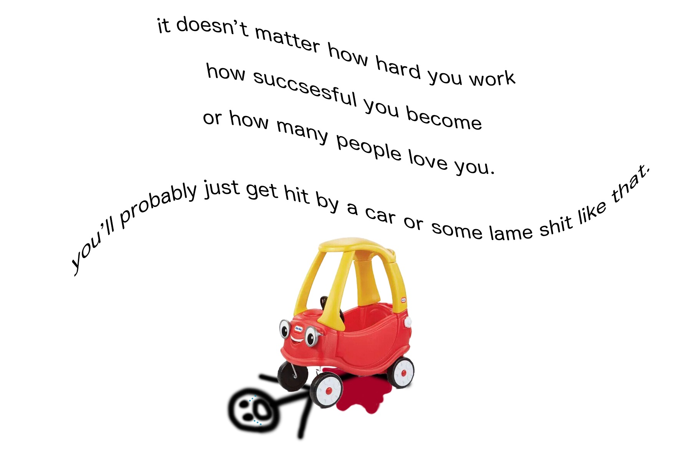
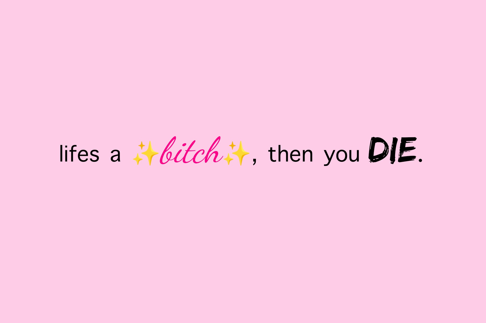
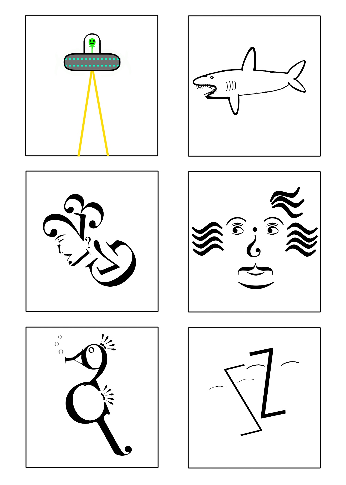
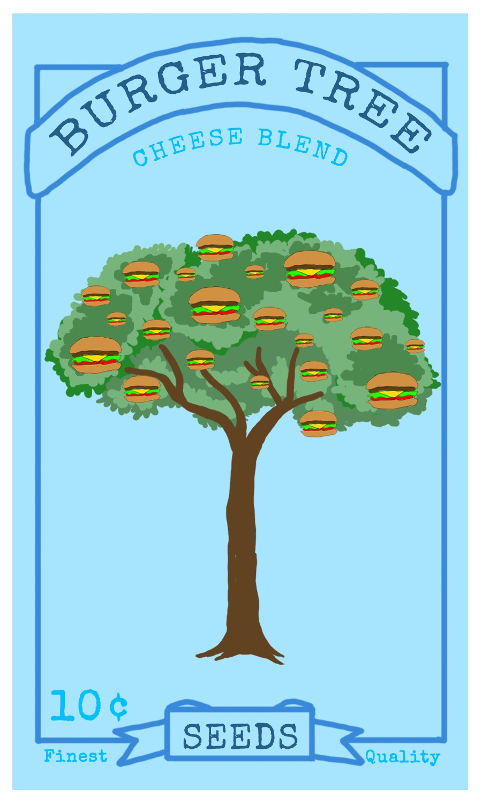
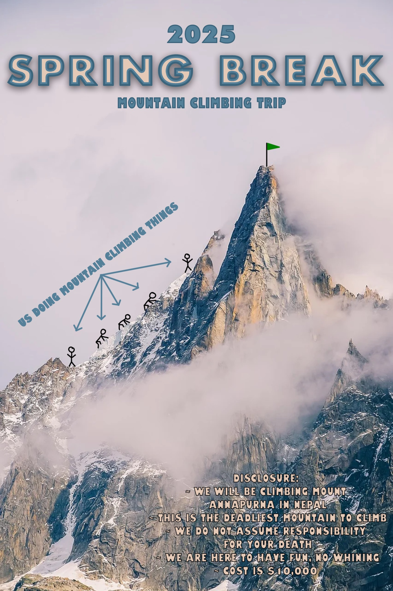
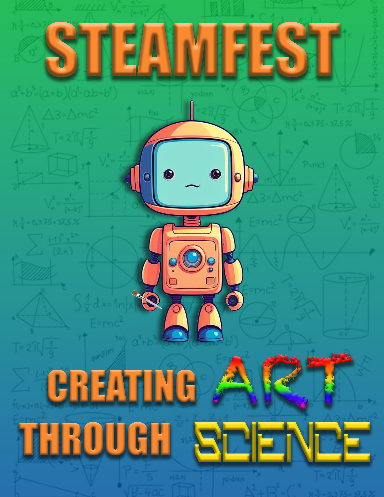
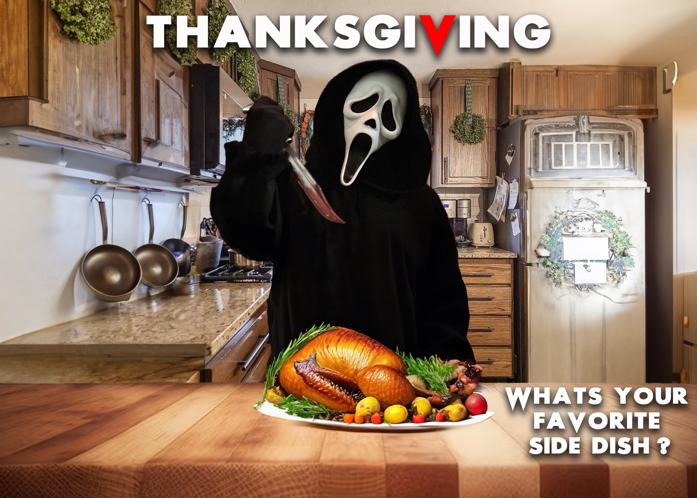
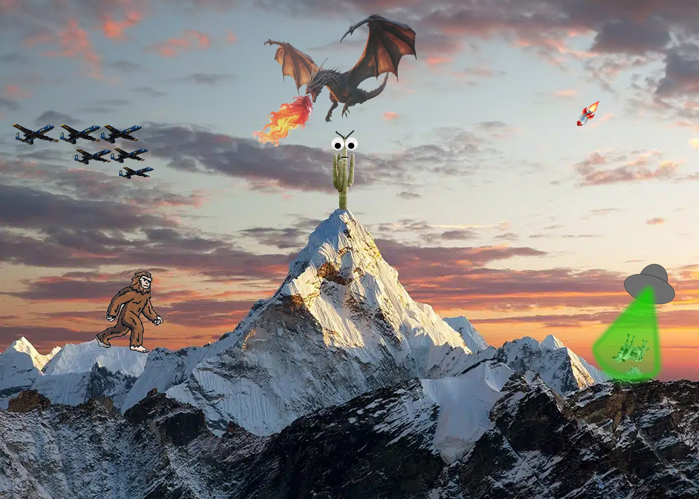

SB - digital media & design final
Arts 171 gallery
This is my collection from the Arts 171 portion of the program!!
Arts 171 is a class on adobe photo shop, we just had propmts and made stuff based on the prompts using photoshop!!!
text tool demo 1

This is one of the very first things I made in Photoshop. We were just learning how to use the tools, and for this project, we focused on using the text tool. The assignment was to choose a quote and turn it into a small piece of art. I found this quote and knew I had to use it because I couldn’t stop thinking about the time my cousin hit me with one of those Little Tikes cars when we were younger—so of course, I had to depict that moment.
text tool demo 2

This piece is from the same project as the last one—using Photoshop and the text tool to turn a quote into a piece of art. I chose a different quote for this one, and honestly, I cracked myself up while making it. I had a lot of fun playing with different fonts, and I think that variety really helped the design stand out and match the humor of the quote.
typography doodles

The assignment for this piece was to use typography to create images, meaning we could only use the letters, numbers, and symbols found on a keyboard. We had to think of new ways to arrange them to form recognizable pictures. This one was really fun for me, and I enjoyed experimenting with how simple characters could turn into visual art. The middle two are definitely my favorites—I feel like they turned out the strongest.
book covers

This was an interesting project. We had to design a book cover and then, without changing the main graphic at all, use lighting, shading, color hues, and a new title to completely shift the mood and feel of the book. This one really threw me for a loop—how do you turn a mafia book cover into a children’s book? But I conquered the challenge, and honestly, I think they all turned out pretty good.
seed packet

This was a design challenge where we had to create a seed packet that would grow some kind of actual meal—whether it was a pizza bush or a donut flower. I decided to go with a burger tree, mostly because I was seriously craving burgers that day. This is the final design I came up with, and I had a lot of fun bringing the idea to life.
spring break poster

This was an assignment to create a spring break trip poster. I decided to go with a mountain climbing adventure to the most deadly mountain in the world and added a funny little disclaimer at the bottom to balance the intensity with some humor. It was a pretty fun piece to make, and I enjoyed playing around with the contrast between danger and vacation vibes.
steamfest poster

This assignment was to create a poster to promote STEAMFEST, a festival for K–12 students that the college puts on every year to teach how art and science go hand in hand. I layered a green and blue gradient background over math and science equations to give it a more scientific feel. I also added a little robot holding a paintbrush to represent the connection between creativity and technology. Finally, I played with the fonts to give the art and science elements their own unique visual identity.
thanksgiving rebrand

This assignment was to rebrand Thanksgiving, so I decided to combine it with Halloween. I used a spin on the famous quote from Scream “What’s your favorite scary movie?”and replaced the usual horror imagery with Ghostface stabbing a turkey instead of a person. It was a really fun and creative piece to make, and I enjoyed putting a spooky twist on a traditional holiday.
new year, new me (spoiler alert: im a pissed off cactus)

For this project, we were asked to create a scene of ourselves in the new year as something other than a human. Since the beginning of the year was rough for me, I decided to turn myself into a pissed-off cactus. I placed the cactus on top of a mountain with all sorts of random chaos happening around it to represent how life feels—messy, overwhelming, and unpredictable.
human body, animal head

For this project, we had to put an animal head on a human body. I chose a raccoon and transformed him into a dapper old man. To make the image flow better, I converted the photo to black and white. (Fun fact: the body I used is actually Albert Einstein’s!)
skillsusa pin design
This is my SkillsUSA Pin Design, created for the competition prompt to represent Michigan through our own perspective. I chose to include an elk, the state tree (Eastern White Pine), and the Mackinac Bridge to symbolize key aspects of Michigan’s identity. I also incorporated water to represent the Great Lakes, as Michigan is known as the Great Lakes State. The overall shape and composition were inspired by national park badges, giving the design a natural, adventurous feel that reflects Michigan’s outdoor beauty. I’m proud to share that this design placed 1st regionally and 3rd at the state level!